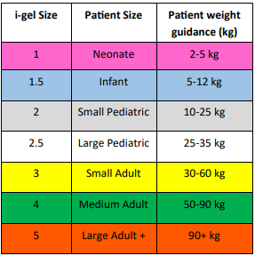

i-Gel
Clinical Indications:
• Inability to adequately ventilate a patient with a bag valve mask or longer EMS transport distances require a
more advanced airway
• Inability to secure an endotracheal tube in a patient who does not have a gag reflex
• Appropriate intubation is impossible due to patient access or difficult airway anatomy
Procedure:
1. Pre-oxygenate the patient with 100% oxygen if time permits.
2. Select the appropriate tube size for the patient.
3. Remove the device from the protective cradle and inspect for any signs of damage.
4. Place water-soluble lubricant in the middle of the protective cradle.
5. Lubricate the back, sides and front of the i-gel with a thin layer of lubricant.
6. Grasp along the integral bite block and face the cuff outlet toward the patient’s chin.
7. Insert the i-gel into the mouth in the direction towards the hard palate.
8. Glide the device down and back along the hard palate with continuous but gentle pressure, until
resistance is met.
9. The tip of the airway should be located in the upper esophageal opening and the cuff should be located
against the laryngeal framework. The incisors should be resting on the integral bite block.
10. Tape to secure or use a commercial tube holder.
11. Connect the i-gel to a BVM and assess for breath sounds and air entry.
12. Confirm tube placement (i.e. EtCO2, chest rise, breath sounds, absent epigastric sounds)
13. Continue to monitor airway with continuous
waveform capnography and pulse oximetry.
14. Reassess i-gel placement after every move and upon arrival in the ED.

King Airway
Clinical Indications:
• Inability to adequately ventilate a patient with a bag valve mask or longer EMS transport distances
require a more advanced airway
• Inability to secure an endotracheal tube in a patient who does not have a gag reflex
• Appropriate intubation is impossible due to patient access or difficult airway anatomy
Contraindications:
• Responsive patients with an intact gag reflex
• Patients with known esophageal disease
• Patients who have ingested caustic substances
Procedure:
1. Pre-oxygenate the patient with 100% oxygen if time permits.
2. Select the appropriate tube size for the patient.
3. Apply a water-based lubricant to the beveled distal tip and posterior aspect of the tube.
4. Hold the King Airway Device at the connector with your dominant hand. With your non-dominant hand,
hold the patient’s mouth open and apply chin lift unless contraindicated by c-spine precautions.
5. Gently insert the tube rotated laterally 45-90 degrees so that the blue orientation line is touching the
corner of the mouth. Once the tip is at the base of the tongue, rotate the tube back to midline.
6. Insert the airway until the base of the connector is in line with the teeth and gums.
7. Inflate the pilot balloon with air depending on the size of the device used.
8. Ventilate the patient while gently withdrawing the airway until the patient is easily ventilated.
9. Confirm tube placement (i.e. EtCO2, chest rise, breath sounds, absent epigastric sounds)
10. Secure tube using tape or commercial device.
11. Reassess placement after every move and upon arrival in the ED.